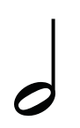
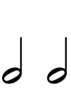
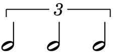
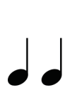
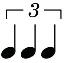
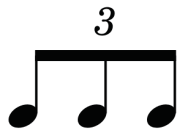
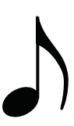
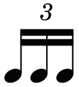
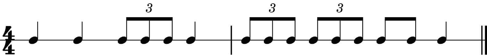
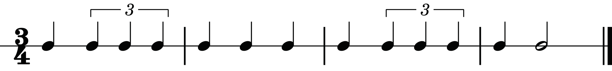

Table 1.1: Division of notes into two and three parts
Division of notes into two equal parts |
Division of notes into three equal parts (triplets) |
|---|---|
|
 = |
 = |
|
=
 |
 = |
|
♩ = ♪ ♪
|
♩ = triplet eighth notes
 |
|
 = |
 = |
Counting triplets
Like other notes, triplets can also be counted using numbers or syllables while clapping. When counting the beats using numbers, the word ‘triplet’ or syllables ‘la’ and ‘li’ will follow as shown in figures 1.1, 1.2 and 1.3.

One two Three-trip-let four One-trip-let two-trip-let Three-and four
One two Three-la - li four One -la - li two -la - li Three-and four
Clap clap Clap clap Clap clap Clap clap

One two trip - let One two three One two trip - let One two (three)
One two la - li One two three One two la li One two (three)
Clap clap Clap clap clap Clap clap Clap clap